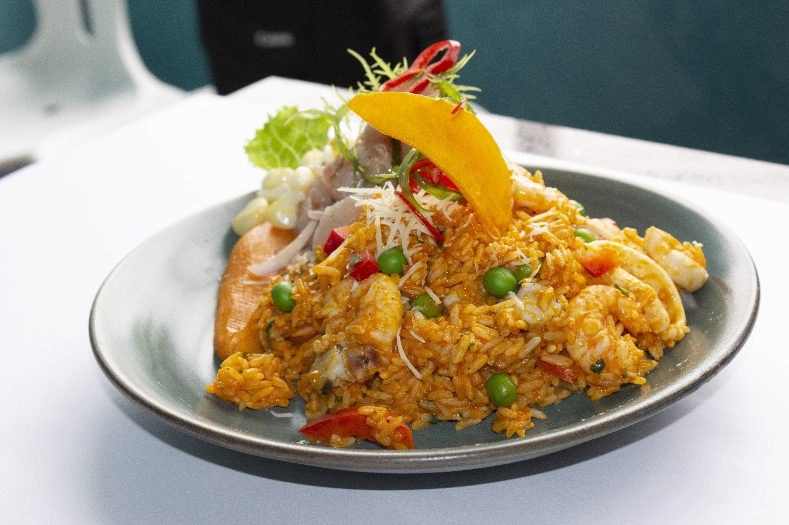

Arroz con Camarones
Región Caribe • Colombia

Historia y Tradición
El arroz con camarones está relacionado principalmente con las regiones costeras de Colombia, especialmente el Caribe y el Pacífico, donde los productos provenientes del mar forman parte importante de la alimentación tradicional. La combinación del arroz con camarones, verduras, condimentos y preparaciones propias de cada región refleja la influencia de las comunidades costeras y su relación histórica con los recursos marítimos y fluviales. Es un plato que evidencia la diversidad cultural y gastronómica de las costas colombianas, donde los ingredientes locales se integran con diferentes técnicas culinarias transmitidas entre generaciones.
Ingredientes
- 500 g. de camarones
- 1 taza de arroz lavado
- ½ taza de leche de coco
- ½ taza de hogao o guiso
- 1 cucharada de perejil
- Sal y pimienta
Preparación
- Limpie los camarones (pele y desvene). Cocine las cáscaras en una taza de agua por 5 minutos. Cuele el caldo y resérvelo.
- Caliente el hogao en una cazuela grande. Saltee los camarones brevemente, luego agregue el arroz, el caldo de las cáscaras y dos tazas de agua. Sazone con sal y pimienta, y cocine por 20 minutos.
- Añada la leche de coco, revuelva y deje cocinar a fuego muy lento por 10 minutos más (debe quedar húmedo). Espolvoree el perejil y sirva.